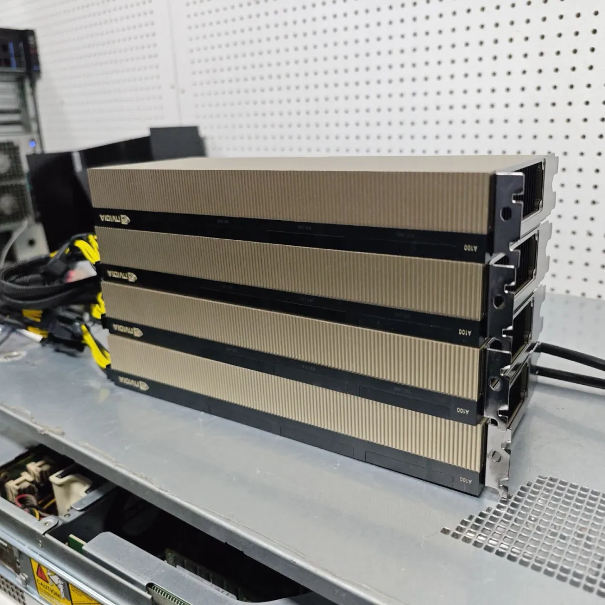
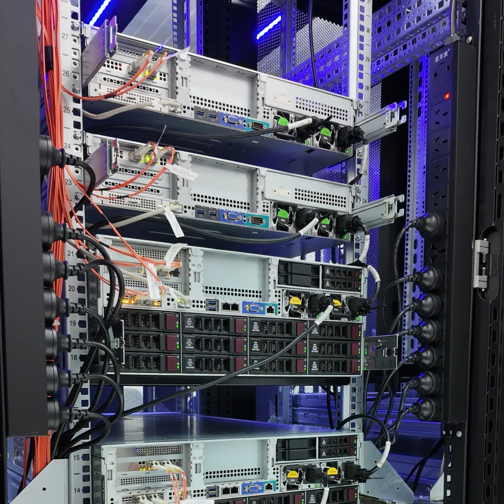
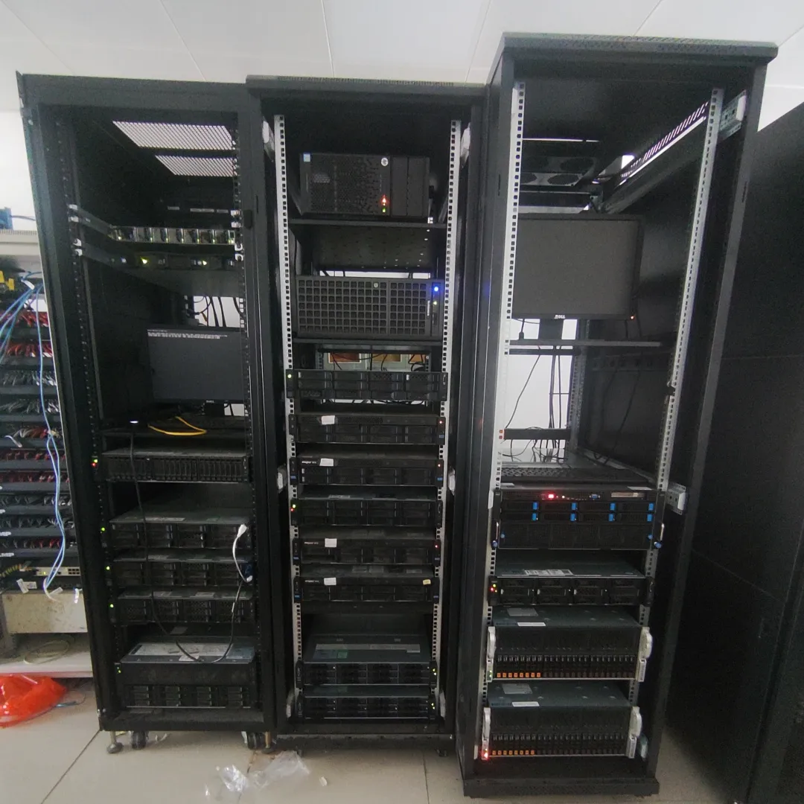
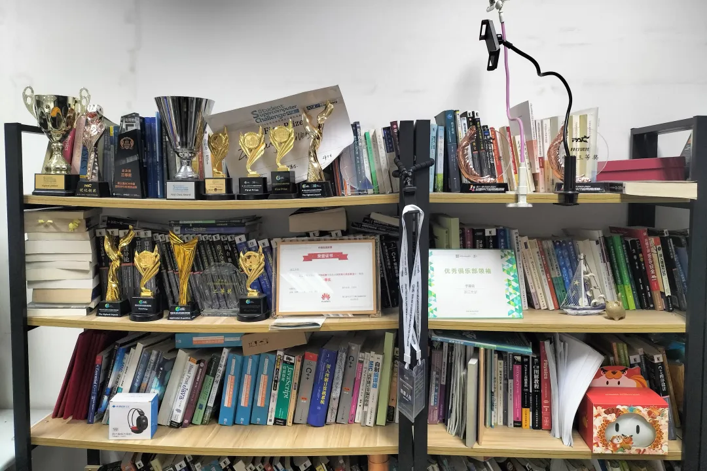
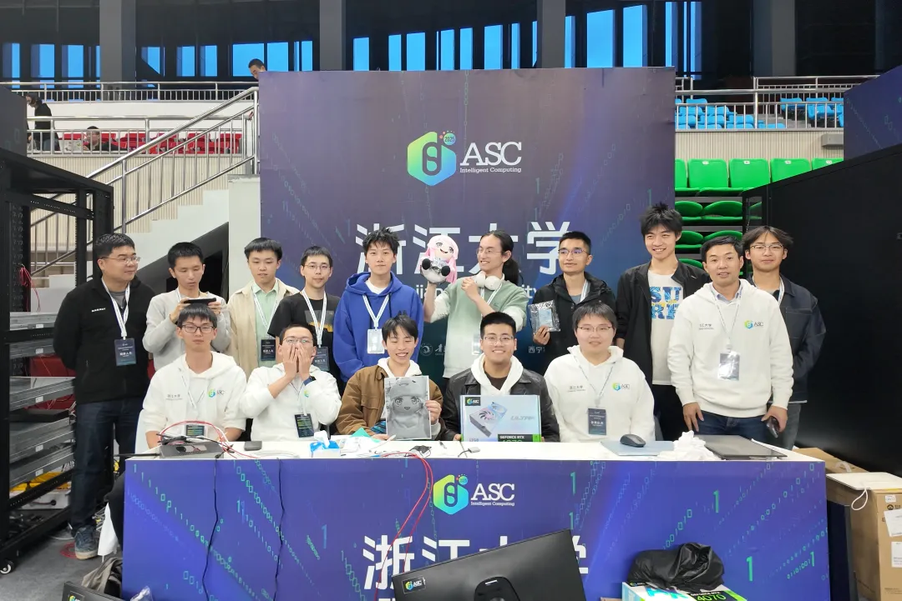
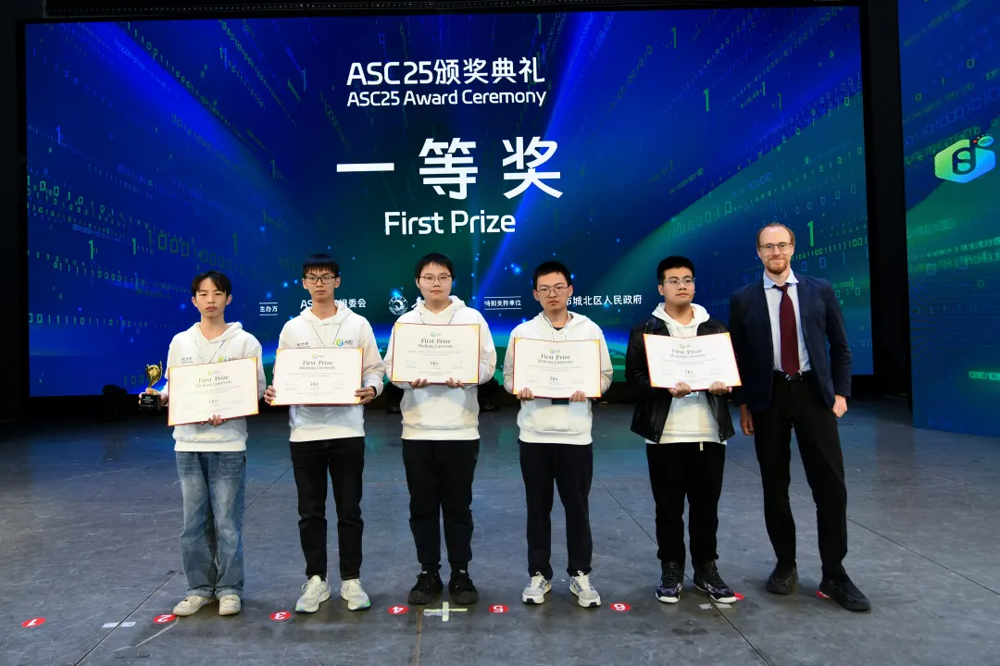
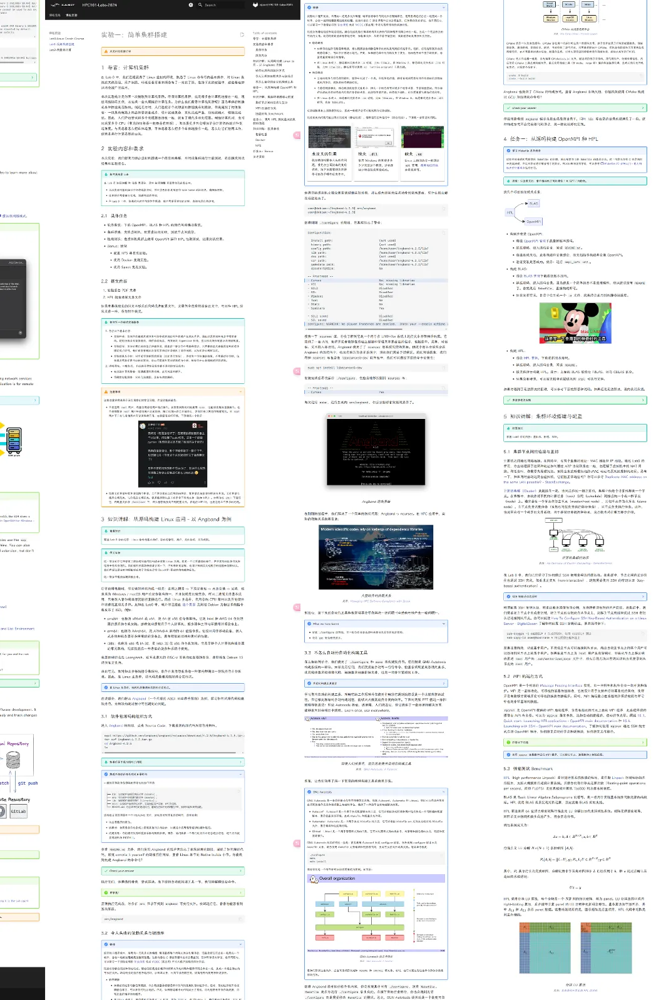
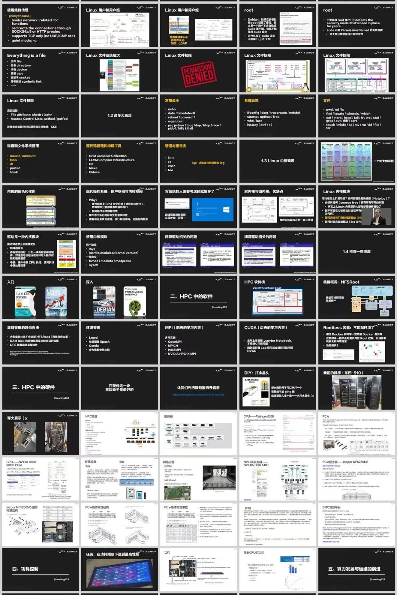
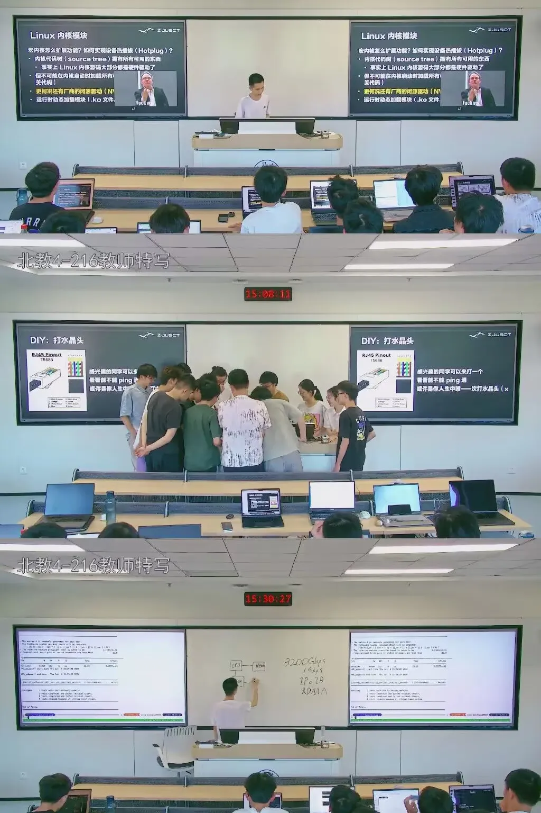

🎓 Hello, HPC World | 2025 超算短学期课程正式启动！
🚀 超算短学期课程：HPC101¶
📌 基本信息¶
- 🎯 面向对象： 不限年级、不限专业，主要面向 2024 级本科生
- 📍 上课地点： 紫金港校区，教室待定
- 📅 课程时间： 6 月 25 日 - 7 月 7 日，每天 8:30 - 11:30 & 14:00 - 17:00
- 🧠 课程强度： 大、实、难、有趣！（连硕博生都来选！）
📩 报名方式、QQ群、邮件地址 请见文末说明
什么是 HPC？¶
HPC，全称 High Performance Computing，中文名叫“高性能计算”，是一种以极高速度执行复杂计算任务的技术。HPC 系统可以在 极短时间内处理海量数据、执行复杂模拟、支撑深度学习和科学研究。
举个例子：世界最快的超级计算机 Frontier，每秒可执行 超过百亿亿次浮点运算，相当于 数万张 RTX 4090 显卡 同时“满功率燃烧”🔥。
💡 HPC 为什么这么快？¶
传统计算机使用串行计算 —— 一个任务一个任务慢慢执行。
而 HPC 使用的是：
- 并行计算： 任务在数千上万个核心上并行运行
- 计算集群： 上百台服务器组成超级“大脑”
- 高速互联与调度系统： 任务/存储/通信全链条优化
🔧 HPC 用在哪？¶
HPC 正在加速世界的进步，应用场景包括：
- 🔬 科学模拟： 天气预报、气候变化、宇宙建模、基因测序
- 🧬 医疗健康： 药物研发、癌症诊断、人类基因组测序
- 💰 金融风控： 风险模拟、自动交易、欺诈检测
- 🛡️ 国家安全： 国防模拟、能源仿真、情报分析
- 🤖 AI 训练： DeepSeek、图像识别、自然语言处理等的底层支撑
课程导览：HPC101，我们教你这些¶
✅ 前置知识：计算机体系结构与系统¶
你将了解：
- CPU/GPU 架构与调度
- Cache 一致性、SIMD 优化
- Shared Memory、Bank 冲突机制
✅ 核心技能：并行编程三大技术栈¶
- OpenMP / MPI（CPU 并行编程）
- CUDA C（GPU 并行编程）
- 并行算法设计与调优技巧
✅ 工具链训练¶
我们准备了 Lab 0：Linux Crash Course
- Shell 指令操作
- 使用 Slurm 提交任务
- 用 Spack/Lmod 管理环境
课程安排 🗓️¶
| 时间 | 内容 | 讲师 |
|---|---|---|
| 6.25 | 超算概述 | 陈建海 |
| 6.26 | 集群软硬件与运维 | 郝星星 |
| 6.27 | HPC 中的计算机系统 - 1 | 李晨潇 |
| 6.28 | HPC 中的计算机系统 - 2 | 何水兵 / 潘哲 |
| 6.30 | 向量化并行计算基础 | 陈宏哲 |
| 7.1 | CUDA C 编程基础 | 王则可 / 陈锴琪 |
| 7.2 | OpenMP/MPI 并行编程 | 李晨潇 |
| 7.3 | 高性能计算高级话题 | 王则可 |
| 7.5 | Profiling 性能分析 | 朱宝林 |
| 7.6 | 机器学习基础 | 林熙 |
| 7.7 | 机器学习高级话题 | 张寅 |
💤 6.29 & 7.4 为休息日 📌 课程安排可能略有调整
超算短学期课程由经验丰富的学长教学团队主导，涵盖授课、实验及评分全过程，同时由指导老师部分参与授课，确保内容的专业性与前沿性。我们致力于营造轻松高效的学习氛围，让你在愉快的体验中掌握硬核知识。历年课程的平均分高达 92 分以上，深受同学们欢迎。
这不仅是一门课程，更是你通往专业学习深处的敲门砖。你将在这里提前接触计算机系统、操作系统、体系结构、编译原理等核心课程知识，甚至可能邂逅未来这些课的助教。
我们也欢迎来自非计算机专业的同学加入！在实际竞赛中，诸如生物信息、地理信息、物理、应用数学等背景的队员，在面对交叉赛题时往往能提供独特的视角与理解方式，为队伍带来意想不到的突破。我队中就有多位非计科专业成员，正承担着关键角色，展现出卓越的能力。
此外，通过实践训练，你将获得宝贵的性能优化直觉与工程素养，提升对代码效率、资源调度等问题的敏感度，这些能力将在未来科研或工程实践中持续为你赋能。
对课程内容、节奏或技术细节有疑问？欢迎在课程交流群中直接向授课学长提问，我们将热情解答，助你无忧起航。
谁适合这门课？¶
✅ 想提前了解计算机体系结构的你
✅ 对并行编程、AI、系统感兴趣的你
✅ 想走科研、系统、算法方向的你
✅ 想挑战自我、不怕难题的你！
浙大超算队：将兴趣变为实力的地方¶
HPC 听起来很酷，但你可能会担心：“这东西我真的能接触到吗？”在浙江大学超算队，我们说的不是空话，而是实打实的实机练习与真实体验。
{kind=link}
⚠️ 短学期是我们选拔大一新生加入超算队的主要途径，通过课程学习和实践表现进行初步筛选与考核。如果你想加入超算队，请务必不要错过这次宝贵的机会！
🧪 顶级硬件，手把手接触超级计算¶
📍在紫金港东四教学楼，我们拥有：
- 超过十台 高性能服务器，全权由队员管理与维护
- 多节点异构计算集群（含 CPU + GPU）
- NVIDIA A100 等主流计算卡供上机实验
- 专属实验室与工作环境，支持完整 HPC 学习流程
  
{kind=link}
{kind=link}
{kind=link}
{kind=link}
🏆 我们有丰富成果，让兴趣真正落地¶
浙江大学超算队自组建以来，成绩斐然：
- 🏆 2025 ASC 全球总决赛 一等奖（第4名）& 应用创新奖
- 🏆 2024 ASC 全球总决赛 一等奖（第4名）& Linpack 世界最高性能
- 🌍 2024 ISC 世界大学生超算竞赛 第五名
- 🥇 2023 IndySCC 全球冠军
- 🏅 2023 ASC 全球总决赛 一等奖（第4名）& Linpack 世界最高性能
- 🥉 2022 ACM-China IPCC 全国三等奖（第6名）
- 🌟 2022 SC 世界大学生超算竞赛 第四名
- 📈 历届 ASC、ISC、SC、PAC 等赛事共计十余次一/二等奖
- 🎖️ 多次打破 Linpack 性能纪录，成为国际竞赛中的中国代表力量
- 🧠 将竞赛成果转化为 三篇正式科研论文
- 🔧 负责浙大校内 Git 服务与镜像服务，技术能力直接服务校园
这些都不仅仅是荣誉，更是我们的队员在实战中成长、进阶、创新的见证。
  
{kind=link}
{kind=link}
{kind=link}
🌐 我们有顶尖平台和广阔出口¶
- 💯 享有学校和学院的竞赛保研加分认定
- 🎓 队员中有多人保研清北、浙大，或赴 CMU、UCSD、SFU 等海外名校深造
- 💼 与 英伟达、华为、阿里巴巴 等企业保持良好联系，参访、实习机会丰富
- 🧑🏫 多位队员在大二、大三阶段就获得科研助研机会
我们不只是竞赛队，更是一个连接校园与产业、学术的 高性能计算实践共同体。
{kind=link}
{kind=link}
🌍 我们是技术爱好者的乌托邦¶
- 📚 每周技术例会 + 分享制度，论文/经验/PPT/源码自由交流
- 🍕 奶茶披萨不断，团队聚餐频繁，氛围轻松有趣
- 🧑🔬 无论你是系统工程控、算法开发者、AI 玩家还是科研狂热者，都能找到伙伴
我们相信真正的成长来自 兴趣驱动的自由探索 + 实践驱动的深度沉淀。
{kind=link}
{kind=link}
{kind=link}
如何报名？¶
🚨 本课程 不通过选课系统报名，务必提前提交报名材料：
📩 报名邮箱： mail@zjusct.io
🗓️ 截止时间：5 月 30 日晚 23:59
🔖 邮件格式要求：
- 标题：【2025 短学期报名表】姓名 学号（例：张三 3220100001）
- 内容：联系方式（邮箱、电话、QQ、微信等）
- 附件：Lab 1（MiniCluster）实验报告 或 个人简介（二选一，鼓励同时提交）
📎 附加推荐材料：
- Lab 0（Linux Crash Course） 结果（可选）
💬 一起聊聊：我们希望同每一位希望修读该课程的同学聊聊天，请不要将该环节当作面试。请在课程网站（见下文）提供的 Schej 链接中选择你方便的时间段，并在邮件内说明，方便我们安排时间。将以群聊的形式进行，每场约半小时。
📌 我们将优先考虑提交实验报告的同学。实验完成度将作为选拔的重要参考因素之一。
🚫 请不要在一轮、二轮选课中选其他「课程综合实践Ⅰ」课程，避免冲突！
加入课程交流群¶
📷 扫码加入「2025 HPC101 短学期交流群」
获取实时通知、答疑解惑、交流分享！
课程群号｜698275209
{kind=link}
往届风采 ✨¶
  
{kind=link}
{kind=link}
{kind=link}
一点建议 & 一句真心话¶
这门课难吗？确实有点。
知识多吗？不少。
收获大吗？非常！
HPC101 是 CS 世界的一次深度潜水
我们相信，愿意踏进这个世界的你
一定能带着满载而归的成果浮出水面
🎓 欢迎来到 HPC101！
我们一起开启这场高性能的夏季探索之旅！